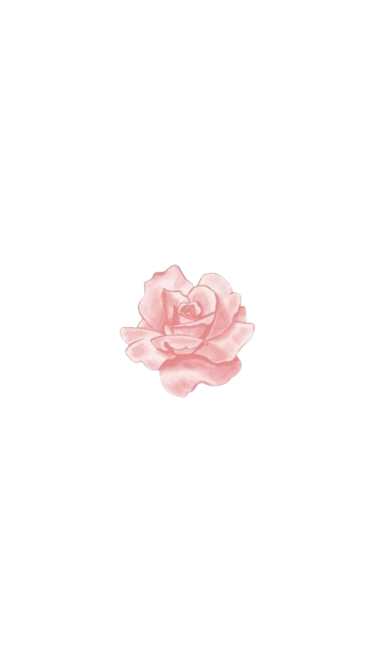
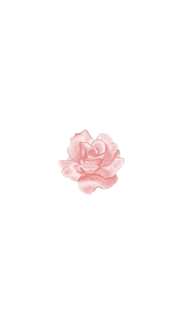

De mi, para ti
Decidí crear esta pequeña página para ti, como una manera de tener un pedacito de mi mundo cerca de ti. Nos conocimos por internet y aunque no llevamos mucho tiempo hablando, siento que hay algo especial en cada conversación, en cada mensaje que compartimos. Aunque estamos a kilómetros de distancia, de alguna forma siento que las cosas se están alineando bien. Cada día que pasa, me hace más feliz saber que tenemos mucho por descubrir juntos. Me mantiene contento pensar en todas las cosas que podemos compartir, las experiencias que nos esperan y cómo, con el tiempo, todo esto puede convertirse en algo aún más bonito. 🌟 El futuro está lleno de posibilidades y estoy agradecido de que tú seas parte de todo esto. Gracias por hacer que mis días sean un poco más brillantes y por estar en mi vida de una manera tan inesperada pero perfecta
-
-
--
--
 
